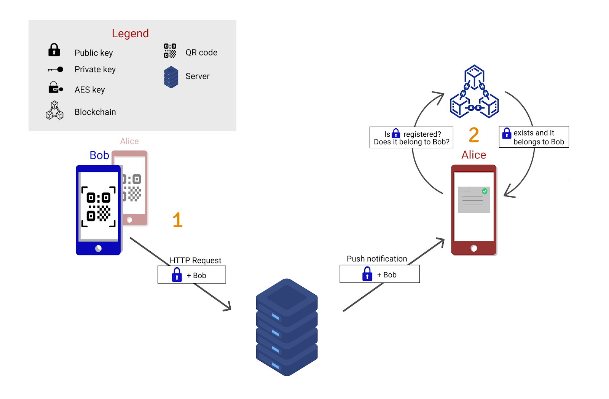
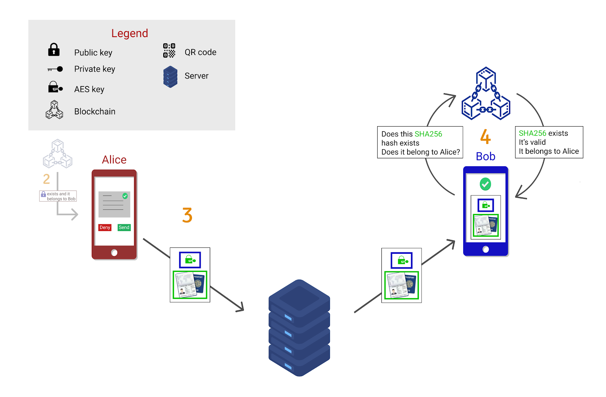
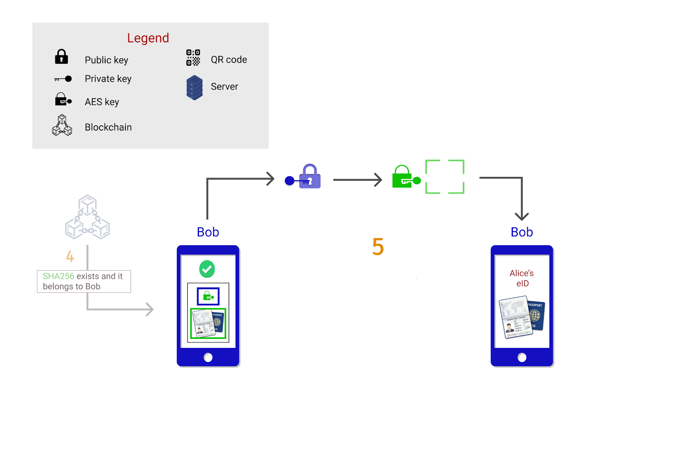
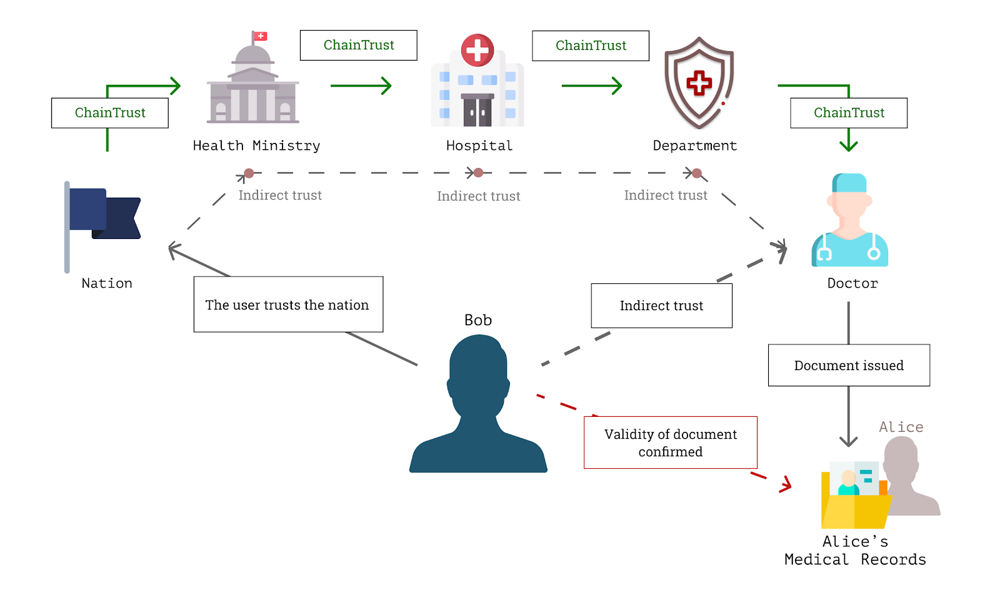
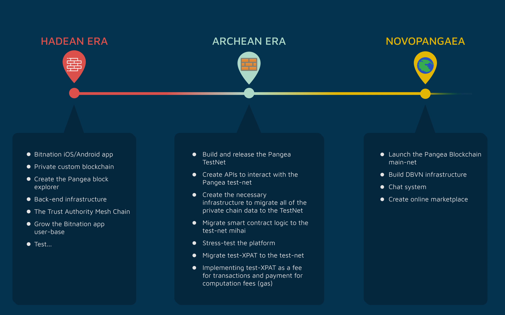

Bitnation Technical Description
1. Overview
Bitnation app is a cross-platform mobile app that serves as an entry point to the Bitnation Ecosystem. It provides the service of document issuing, document verification, and document value in a secure and decentralized manner. In the context of the system, a document is any form of private data ( medical records, birth certificate, business contracts, etc …. )
Documents are essential to any aspect of our day to day life, and in a globalized interconnected world, traditional means of bureaucracy do not suffice. Current systems are either slow, insecure, or both. In many cases, they’re not even used because paper and ink stamps do a better job. With the accelerated advancement of technology, bureaucracy is becoming a massive bottleneck in pretty much any human endeavor, be it waiting in line for days for a travel visa, browsing medical records with a life on the line, or responding to a global pandemic. The world is moving too fast for our current bureaucratic system. The purpose of the Bitnation app is to be an interface to a system where a user can host his/her identity as an eID profile and attach documents belonging to that identity in a secure manner, with full ownership and control of personal data. It also provides the ability to digitally prove or verify the validity of any owned document within the system by leveraging cryptography and blockchain.
The eID itself is a digital identity, just like any personal identification document, but its full use case is realized by attaching documents to it. In a real-world example, showing a marriage certificate along with your ID card, the certificate proves a relationship between two identities, and the ID card proves that one of them is you. The eID has the same purpose, only digitally. You can prove your identity and present any document attached to it in a fully secure manner with full ownership and control of your data. Both the eID and the documents are hosted on the user’s device.
Our eID app connects to the backbone of the whole operation which is the Pangea Blockchain and the Trust Authority Mesh Chain in order to achieve full-featured document management.
This technical document describes a work-in-progress system and specific details are subject to change with discovering new requirements during development.
2. User Information Flow
Before diving into the specifics of the system we need to take a look at the basic user information flow. We have developed a cryptographically secure system to transfer verifiable documents between two users and a way to verify their validity. We use Public/Private key cryptography, AES256, SHA256 for data security, the Pangea Blockchain for notarization, and the Trust Authority Mesh Chain for document recognition.
In the app’s current state the whole flow is initiated by scanning a QR code. Just like showing an ID to a friend or an authority, you can prove that you have a document, that it belongs to you, and that the information it contains has not been altered. The validity of a physical document is proven by hard to fake physical means like an ink stamp, illustration, and rendering. The validity of the eID is realistically impossible to fake due to cryptographic signatures and is verifiable with full accuracy by any party allowed access. You don’t need access to the country’s government database to see if the document is valid.
Below we describe the flow of information that happens when Alice wants to show Bob her eID. She presents the QR code on her screen for Bob to scan, and the information flow initiates.

Figure I: Step 1 & 2
1.Initiate the document request
Bob scans Alice’s QR code and sends out a request to Alice’s phone through our server, along with his public key (blue padlock). The server has the role of facilitating the real-time interaction between the mobile devices and providing any necessary logic. At no point in time does the server have access to any of the user’s documents due to them being encrypted before leaving the user’s device.
2. Alice receives the request
Alice is notified on her device that user Bob is requesting permission to see her eID via a push notification. Alice’s phone then automatically searches on the Pangea Blockchain for the public key she received (search is done for the SHA256 fingerprint of the key). If she finds the key on the blockchain and the key is related to Bob’s eID, then she knows with certainty who she is going to send the data to (Blockchain authority notarization explained in Chapter 3). After this automatic verification, Alice is prompted to choose whether to send her eID or decline the request. If Alice doesn’t want to send her data then she sends out a rejection.

Figure II: Step 3 & 4
3. Alice approves Bob’s request
If Alice chooses to send her document, then the encryption flow begins. After tapping “Send eID” the app:
1- Encrypts the eID file with it’s associated AES key
2- Encrypts the AES key with Bob’s public key
3- Signs the whole message with Alice’s private key (not represented in the diagram)
This results in the eID leaving Alice’s device in a secure encrypted form and accessible by Bob only. After packaging the whole response message Alice can safely send the data to Bob through the backend server. The backend is responsible for re-routing the message to Bob without actually having access to its contents. If at any point the message is intercepted during transmission the data inside does not hold any usable data.
4. Bob verifies the validity of the document
Bob is notified in real-time with Alice’s response, and if he was granted access he has a chunk of encrypted data. Bob’s phone then automatically hashes the encrypted eID and verifies the existence and validity of the hash on the blockchain (Blockchain authority notarization explained in Chapter 3). Bob then sees that the hash exists on the blockchain, is linked to Alice, and is signed by a mutually trusted authority. If these conditions are met, the document is valid since it’s impossible to forge these three conditions simultaneously.

Figure III: Step 5
5. Bob views the document
After receiving the green light from the blockchain, Bob’s phone decrypts the AES key with his private key, decrypts the document with the AES key, and displays it on the screen.
From the users’ perspective, the flow is “Scan -> Wait -> View” for Bob and “Present QR -> Notification -> Send/Decline” for Alice. All the decryption is handled behind the scenes automatically by the users’ devices.
The flow above describes the basic flow at the current stage of the app, after the implementation of the Trust Authority Mesh Chain the flow complexity will grow.
3. The Trust Authority Mesh Chain
This system of secure data verification is only possible if there’s an authority involved. But first, let’s define an Authority in the context of the application. Any user in the Bitnation ecosystem can be an Authority and issue documents. A document is issued by notarizing some data on the blockchain. That’s the process of signing the hash of the encrypted data and attesting that the information contained inside is truthful by publishing it on the blockchain.
A document has value only if it’s recognized by whom you present it to. Because of this, we have created the Trust Authority Mesh Chain (TAMC). The TAMC is a system where parties can enter into one-way trust relationships, thereby accepting a document notarized by another Authority. In cryptography, this decentralized trust model is called “web of trust”.
This one-way relationship we call ChainTrust. When an authority ChainTrusts another authority, it automatically recognizes any documents notarized by it as valid, thus facilitating the creation of a mesh network based on social, economical and political relationships. This phenomenon works on both large and small scale relationships. It has the same implications between two communities ChainTrusting each other and two nations ChainTrusting each other. This type of peer-to-peer network scales with the growth of the network itself and does not require any central authority to govern the system.
Authorities will also have the option to enter in a limited-link ChainTrust relationship. This function will allow to ChainTrust a limited number of links down the chain. The need for this arises when you trust the documents issued by an Authority but not necessarily anyone they trust. There will also be the possibility of blacklisting specific Authorities down the trust chain.
There may be some dissonance between the use of blockchain and the word “trust” in the same sentence since blockchain was initially developed to bypass it. But that is only necessary for anonymous system participants. For the needs of document management and governance, we need some form of trust management because “An Authority Can Not Be Anonymous”. An authority is a public entity that needs to be entrusted with certain privileges. And because an Authority is a public entity, they are vulnerable to Reputation. Because of the lack of anonymity, an Authority’s privileges can be revoked by its users or other Authorities as punishment for acting maliciously.
Bitnation is an open system, and users have full freedom to choose whether to participate in a particular Authority’s jurisdiction or not. Along with this, users are free to create their own jurisdictions and grow them by providing a better service than currently available. It’s up to Authorities on the network to ChainTrust each other, this allows for complex relationships between people and societies very close to actual personal human relationships, only better, more efficient, and facilitating true democracy.
The underlying technology of the TAMC lets communities cultivate relationships between themselves by using an immutable fully decentralized ledger as the backbone of the relationship state. The TAMC works by having a chain of smart-contract transactions between Authorities, where the existence of the transaction indicates the existence of ChainTrust, and the existence of a TrustBreak transaction indicates the revocation of ChainTrust. It creates a one-way link between two entities that are under the control of the ChainTrust giver.
Authorities are penalized for notarizing fake documents by other Authorities via losing ChainTrust. The TAMC does not penalize bad actors for emitting forged documents, instead it provides an infrastructure for exposing bad actors and incentivizing other Authority accounts to revoke ChainTrust from them.

Figure IV: Document validity verification example
Above we have an example of the TAMC in action. In this scenario, Bob wants access to Alice’s medical records. After receiving the document from Alice and checking for the document hash existence on the blockchain Bob needs to know whether he trusts the issuer of Alice’s document. We assume that the most distant common ChainTrust link between Bob and Alice is the Nation they both live in and that Bob never interacted with any other Authorities depicted above. The TAMC incentivizes
In the examples above we can see that the end of the chain is the weakest link, and that makes intuitive sense due to the fact that they have the least to lose. The hospital or the Health Ministry has much more to lose in the event of malicious activity, and are incentivized to govern the activity down the chain and punish bad actors themselves. The incentives come from the reputation score calculations present in the TAMC. These are “Notary Reputation” and “ChainTrust Reputation”.
Notary Reputation - This is the reputation score calculated for an Authority’s actions and notarized documents. The purpose of this score is to judge an Authority’s objectivity towards document notarization. This is the score that shows the Authority’s track record of good and bad document emittance. Whenever a document that was emitted by this Authority is discovered to be a forgery, this score drastically suffers. When this happens, other Authorities that are in a ChainTrust relationship with the bad actor are notified of this. Repeated misbehavior due to corruption or personal interests is punishable by having ChainTrust revoked from you.
ChainTrust Reputation - This is the reputation score calculated for an Authority’s behavior towards other Authorities. The purpose of this score is to determine how diligent the Authority is at keeping track of other Authorities that they ChainTrust. In the case of not revoking ChainTrust from a known bad actor, this reputation score decreases, and it increases with ChainTrust management. This is done to incentivize Authorities to evaluate carefully whom they ChainTrust and how responsive they are to bad actors down the chain of trust. Much like losing trust for vouching for a bad actor, but regaining it for dealing appropriately with that bad actor. Blacklisting specific Authorities will also be possible.
In the end, it’s up to the participants of the trust chain to choose how to deal with each other. Human relationships are a core concept of our species and are one of the main reasons humankind has advanced so fast. The role of TAMC is to make it possible for us to benefit from both the digital world and personal human relationships in a fully secure manner.
4. Mobile Application
The Bitnation mobile app is written in TypeScript within the Angular and Ionic/Capacitor frameworks. This set of technologies makes it possible to split development time and maintenance time in two due to the resulting app being fully cross-platform (Android & iOS). This also results in the ease of finding good developers to work on the app due to the popularity of Angular and JavaScript.
The Bitnation app will be the entry point to the Bitnation Ecosystem. It will provide a way to issue new documents, verify other’s documents, and enter into ChainTrust relationships with other Authorities.
The Pangea Blockchain is a necessary step towards achieving the Bitnation vision. It was previously impossible to maintain decentralization and achieve the processing power we would need in order to support such a large system, but over the past few years, blockchain technology has significantly improved.
We have chosen to participate in the Cosmos Network and build our blockchain using the Tendermint Consensus Engine and the Cosmos SDK. This will decrease development time drastically since there were no good tools for building a blockchain previously. It used to be a labor-intensive task with a drastic cost of unforeseen bugs, which leads to releases being slow due to extensive testing. Thanks to the advancement of software tools we will create the Pangea Blockchain in a fast and secure manner.
The goal of the Cosmos Network is to create a protocol and ecosystem for many blockchains to interact with each other, much like TCP/IP did for old computer networks. We believe that the open-source availability of blockchain creation and connection will give birth to a global ecosystem of interacting networks, again, similar to the current state of the internet.
Because of this, we aim to become the de-facto identity source within the decentralized network of blockchains. Due to this change, XPAT will gain a set of new use-cases, it will be used for transaction fees, voting within the system, peer-to-peer payments and it will be possible to migrate XPAT onto other blockchains within the network.
At the time of writing, the Cosmos Network is occupied by 114 other blockchains, including some top decentralized exchanges and DeFi projects. We see this blockchain network evolving naturally as an economy due to the rules of horizontal scaling, and we aim to be a core part of it.
At the current stage, we haven’t settled on a specific consensus mechanism to use within Tendermint due to the complexity of the subject. There are many paths we can take but since the crypto technology is evolving so fast we wish to see how the landscape changes until we actually have to cross the bridge of building the Pangea Blockchain public test-net.
5. Development Eras
The Bitnation Ecosystem will be developed in three distinct eras: Hadean Era, Archean Era, and Novopangaea.
5.1 The Hadean Era
The Hadean Era derives the name from a geological eon. During the Hadean Era, Bitnation Ecosystem will be fully private as an alpha version of a system. We will be developing the core structures to run the system such as the Bitnation app, the eID, the back-end servers supporting it, the private custom blockchain ran internally, block explorer and the TAMC. During this era, we discover all the features the system requires and implement them in a controlled manner.
The Hadean Era is an alpha version for the Bitnation Ecosystem. Nevertheless it’s meant to be a fully functioning private platform towards the end of alpha. Bitnation will offer a for-profit service to the world for managing documents as a means to fund the project’s development. This will also eliminate the barrier of crypto for users in order to join the ecosystem. Any service will be payable in XPAT at a discount. Besides funding, we aim to grow our network during this phase by offering a stable and secure software that solves an existing problem.
Since we will not store any personal data thanks to hashing we will be less limited by legal issues regarding data privacy. Even though the operation will be private, the Authority chain responsible for giving a document value will still be defined by the users, much like a social networking platform can not dictate whom you have in your friend list.
Towards the end of the Hadean Era we aim to provide solutions for many current issues, primarily cross-border document verification, medical document management and identity fraud prevention for businesses.
The Hadean Era will be an important development stage as we will undoubtedly discover unforeseen technical challenges and requirements for the later stages. It will serve as a testing ground for us and enable us to develop a better system in the end.
5.2 The Archean Era
The Archean Era will be the beta stage of the Bitnation Ecosystem. This will be the transitional stage from a private system to a decentralized system. It will involve:
- Build and release the Pangea TestNet
- Create APIs to interact with the Pangea test-net
- Create the necessary infrastructure to migrate all of the private chain data to the TestNet
- Migrate smart contract logic to the test-net
- Stress-test the platform
- Migrate test-XPAT to the test-net
- Implementing test-XPAT as a fee for transactions and payment for computation fees
During this phase, Pangea Solutions will continue to grow the user-base and mature the ecosystem. We will migrate all the developed features of the private alpha to work with the test-net and stress test the network until we consider it fully stable and secure for a main-net launch
5.3 Novopangaea
The Novopangaea Era will mark the release of the Pangea Blockchain main-net. At this stage, we will transition to a fully decentralized system. Access to the Pangea Blockchain will not be controlled by Bitnation in any way and using our services will become completely optional. At this stage, all of the transactions and computations will be paid in XPAT exclusively and the logic handled by smart contracts. Pangea Solutions will transition from an owner to a legacy open-source maintainer of the system.
After Novopangaea, we will have the backbone infrastructure to complete Bitnation’s vision. Using decentralized identity and document management tools we will create on-chain smart contract infrastructure for DBVNs and Decentralized Marketplace.
Along with that, Pangea Solutions will actively contribute to maintaining and developing features for the open-source Pangea Blockchain.
Pangea Solutions will still maintain the Bitnation app and its underlying infrastructure. With the advancement of crypto technology, we hope to add an easier way of on-boarding the platform using DeFi means or a Fiat to Crypto service.
After this stage, new software will emerge around the Pangea Blockchain that will grow it in a decentralized manner and Pangea Solutions will be just one piece of a bigger whole.

7. Current state and features
The Bitnation dev team’s productivity is a result of following the Agile/Scrum methodology. This results in a rapid development of our products with a continuous release of the app for testing. Our goal is to receive feedback at regular test-release intervals and adjust our development based on it.
Along with continuous testing, we will start the practice of posting a bi-weekly development update. It will involve public disclosure of the development stage, our achievements since the last updates, and our hurdles.
We have kept the development of the Bitnation app hidden from the public until now. This is the current state of the app below and the features we need to finish to have a bare-bones functioning alpha version. When the bottom 4 steps are complete we will initiate our bi-weekly regime of continuous feedback workflow.
v 0.1 alpha
- Create Authentication server
- Implement Registration/Login into app
- Implement QR scanning to app
- Implement camera functionality to app
- Implement eID creation to app
- Create test blockchain framework
- Implement AES cryptography to eID data
- Implement real-time push notifications
- Implement end-to-end eID sending
- Implement Public/Private key cryptography in app
- Notarise eID on test blockchain framework
- Verify eID validity on chain
- Publish to the App Stores
8. Closing Statement
We at Bitnation have a vision for a better world where people are more than a name on a piece of paper and communities are more than just a social structure. We have chosen to build an infrastructure to support this change in public bureaucracy from the ground up.